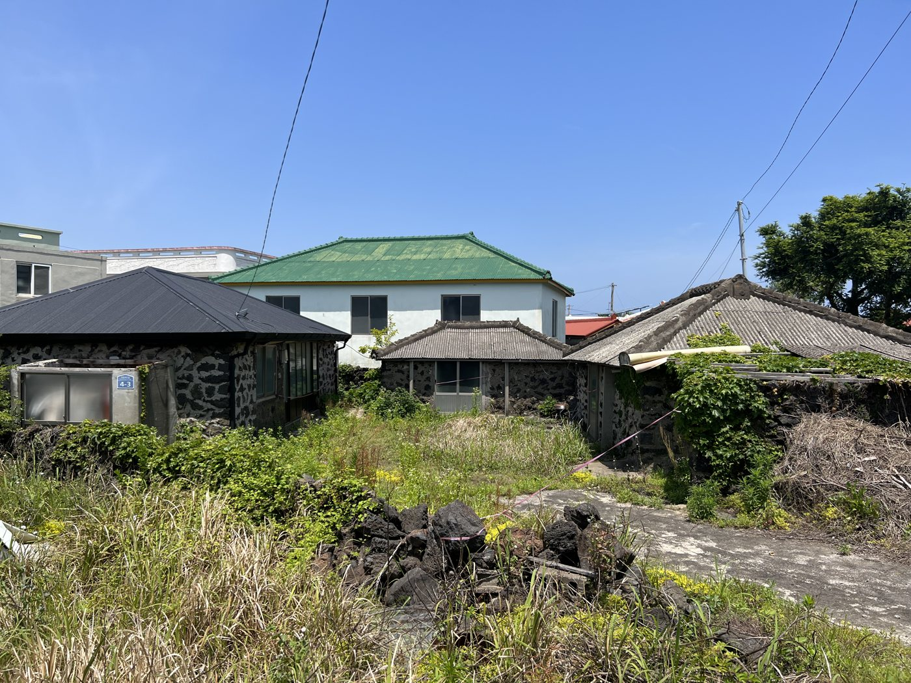
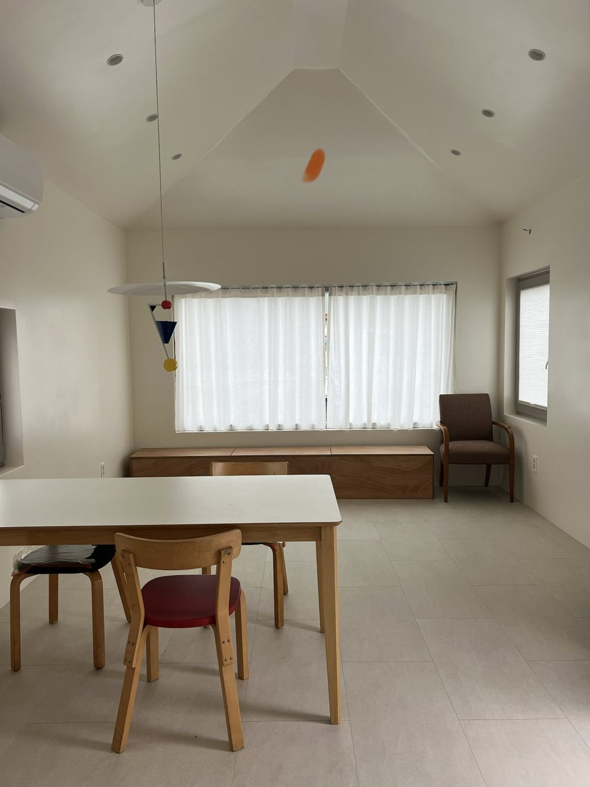

Offline experience · Hosting · Service design
Hosting in Jeju
I designed and built guest homes in Jeju while living in Singapore — then designed the service that lets me host three of them remotely.

My first guest home in Seogwipo, Jeju · hosted since 2023, rated 5.0
Problem
Host guest homes in Korea while living in Singapore — where a global platform doesn't fit local rules.
My role
Owner, designer and host. Managed the build trade by trade, without a general contractor.
Key decisions
Designed homes and a self-serve guest journey for week-to-month family stays, built my own host dashboard, and moved to local platforms when the rules changed.
Outcome
Three homes hosted remotely. First home: 5.0 from 14 reviews and over 90% occupancy in its fourth year.

Before · three old stone houses, 2023

After · inside the new homes, 2026